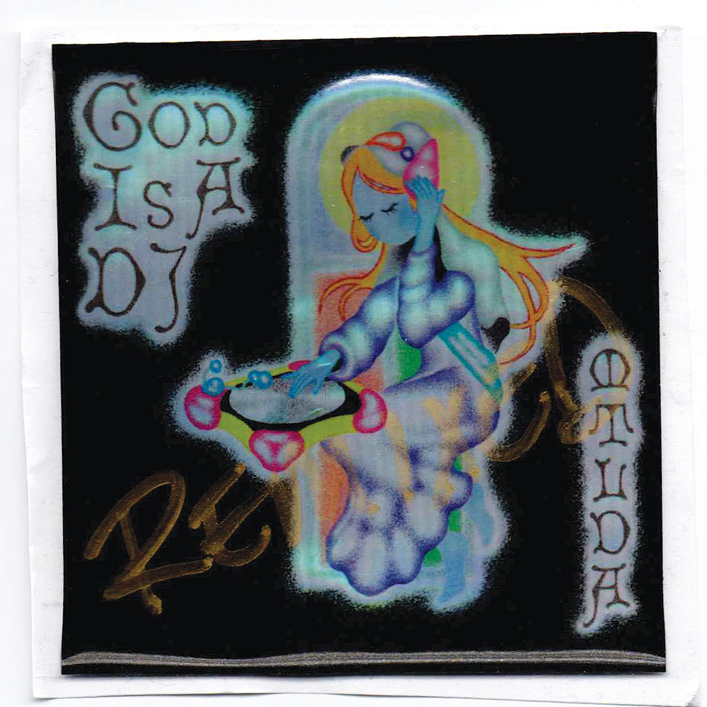

Specialising in audio production, immersive sound and web design.
Producing club-oriented music and DJing as MTLDA since 2017.
Performing as Matilda Sutherland live Punk Rock music since 2021.
Record label at
Girl On Road (G.O.R.), which aims to draw connections
from the disconnect — through sonic pulses and energetic .WAVs.
Creative web development and concept-based design.
Past work
'Gaba' released as part of Fluxx Vol. I, 2020.
Curated G.O.R. Mix series titled "Discover", involving six artists from six separate countries.
Event organiser at Club Lux, a forward-thinking multimedia event housed at Lounge Nightclub, Melbourne.
God Is A DJ was recorded using pure data mapped to a DJM-500 mixer over six live takes. Above The Clouds opens with ambient voices, layering and building to create a harmonic lull. Moving through the EP – Gifted, Strange Request - the tracks gain energy and the voices are re-pitched and warped. Heavenly Data begins with a pitched down, guttural voice before a frantic kick emerges to lead into 4ngel Numb3rs – the EP’s overture.
The remixes provide very much club-ready music in order to translate God Is A DJ into the setting of ascension AKA the dance floor. JIALING’s $WEAT Mix is sample heavy, Baltimore infused break beat with a low dirgy kick , and missgene’s 2-step Mix a UKG tinged outpour of euphoric basslines and bassdrums, while MTLDA’s Pipedreamz Mix is a 138bpm EBM heater made to DJ.

Skylab Series and Archive Home
Abstract of the Cowgirl Manifesto Live Coding Performance. A work in progress, with plans to be released as a larger-scale collaborative music project - including a remix chain which transfers ownership of each iteration to the remixer, set to be released via Powertrip in 2022.